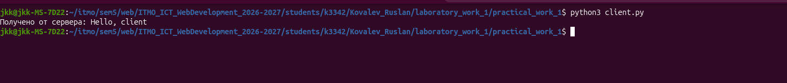

Практическое задание 1. UDP клиент-сервер
Задача: Реализовать клиентскую и серверную часть. Клиент отправляет сообщение «Hello, server», сервер отвечает «Hello, client». Протокол UDP.
Сервер (server.py)
import socket
server_socket = socket.socket(socket.AF_INET, socket.SOCK_DGRAM)
server_socket.bind(('127.0.0.1', 9090))
print("Сервер запущен")
data, client_address = server_socket.recvfrom(1024)
print("Получено от клиента:", data.decode('utf-8'))
server_socket.sendto(b"Hello, client", client_address)
server_socket.close()
Клиент (client.py)
import socket
client_socket = socket.socket(socket.AF_INET, socket.SOCK_DGRAM)
server_address = ('127.0.0.1', 9090)
client_socket.sendto(b"Hello, server", server_address)
data, server_address = client_socket.recvfrom(1024)
print("Получено от сервера:", data.decode('utf-8'))
client_socket.close()
Результат работы
